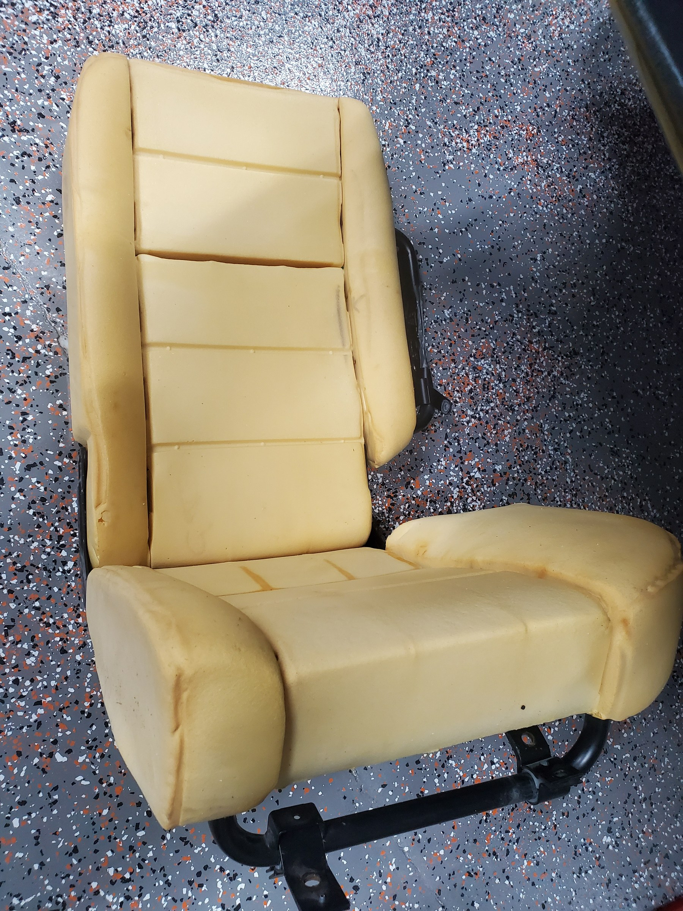
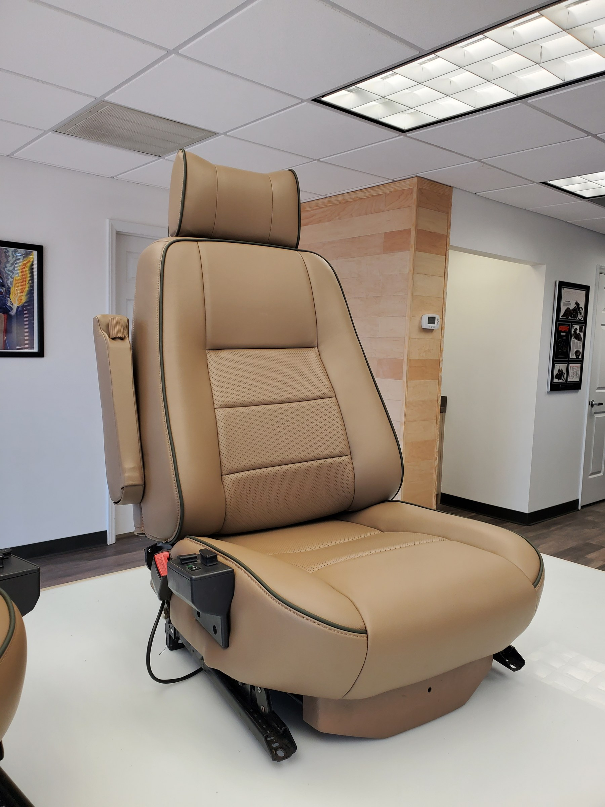
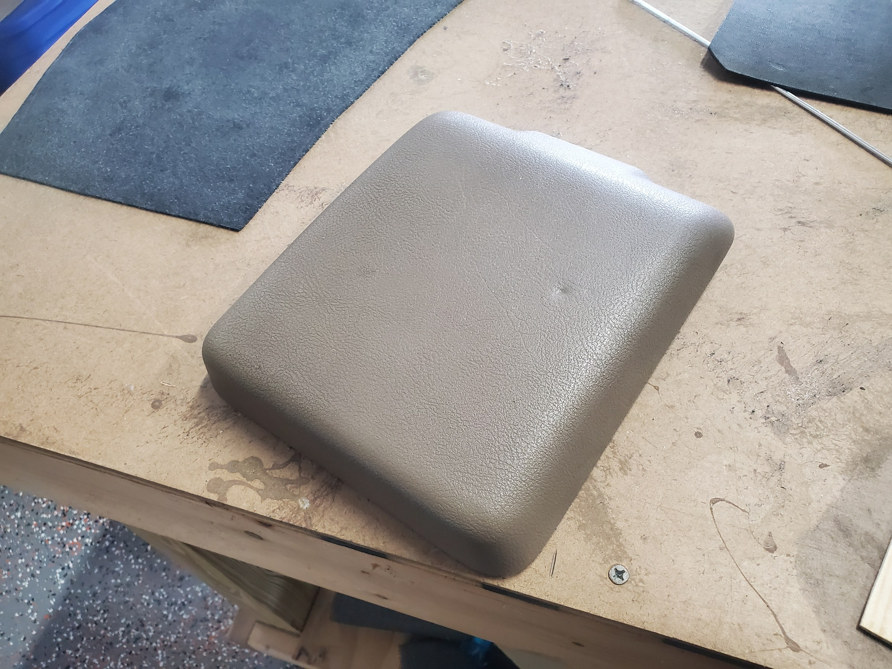
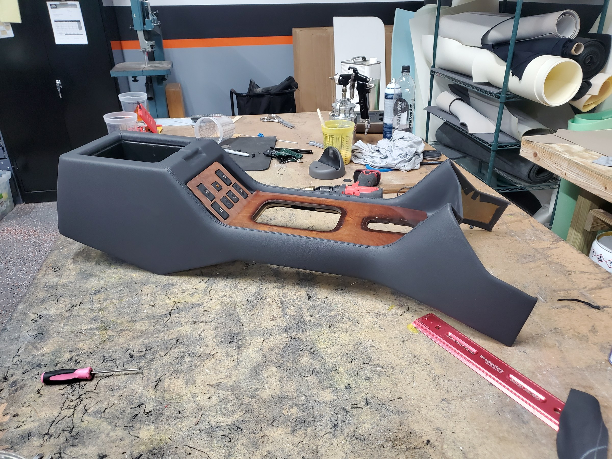
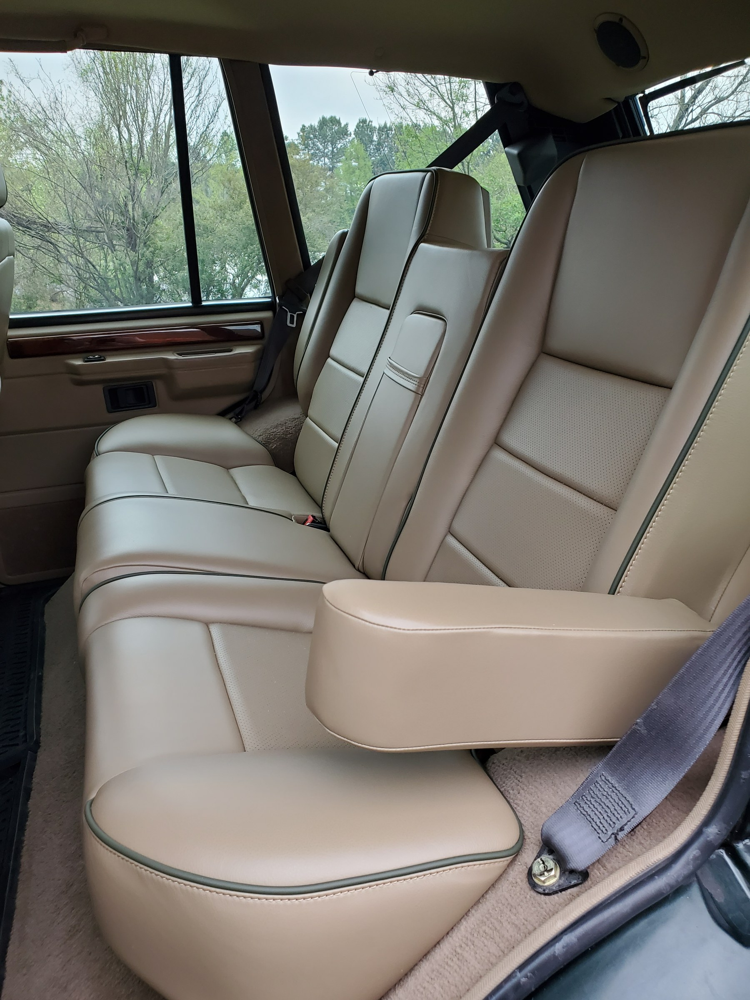
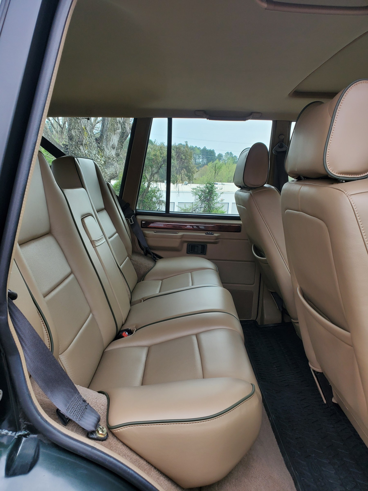

01 · RANGE ROVER
The best execution can feel original.
This Classic Range Rover was re-trimmed in new materials while preserving the restraint of the original interior. I developed and executed the seat patterns and converted the center console from an exposed molded-plastic component into a cut-and-sewn leather assembly. The objective was not to make the work visually louder, but to make the new construction feel as though it belonged there from the beginning.


MOLDED PART → SOFT TRIM
The center console had never been designed to accommodate seams, material thickness, or cut-and-sew construction.



